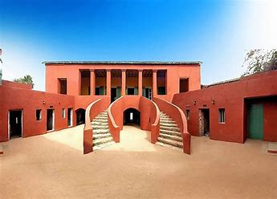
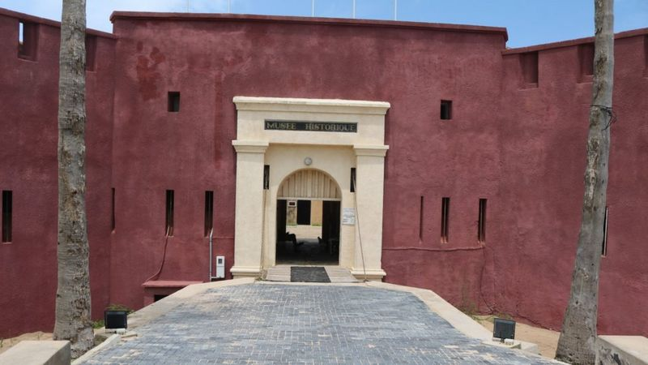

Située à 4 kilomètres au large de Dakar, à vingt minutes par la chaloupe ,
l’île de Gorée est un des endroits les plus attachants du Sénégal.
L'île de Gorée, ou simplement Gorée, est à la fois une île de l'océan Atlantique nord située dans la
baie de Dakar et l'une des 19 communes d'arrondissement de la capitale du Sénégal. C'est un lieu
symbole de la mémoire de la traite négrière en Afrique, reconnu officiellement par l’Organisation
des Nations unies en 1978: Gorée, « île-mémoire » de cette tragédie, fut ainsi l’un des tout premiers
lieux à être portés sur la liste du patrimoine mondial gérée par l'Organisation des Nations unies pour
l'éducation, la science et la culture.

LA MAISON DES ESCLAVES
L’actuelle “Maison des Esclaves” fut construite vers 1780 dans la rue Saint-Germain par Nicolas Pépin,
frère de la signare Anne Pépin, elle-même maîtresse du Chevalier de Boufflers.
Cette bâtisse aurait été la dernière esclaverie en date à Gorée. Les premières remontent à 1536,
construites par les Portugais, premiers Européens à fouler le sol de l’île en 1444.
Cependant les explications données lors de la visite guidée de la “Maison des Esclaves” à Gorée ne
semblent pas étayées par quelque document, quant à la “porte du voyage sans retour“, on peut réellement
douter de l’usage que les commentaires officiels lui attribuent. Effectivement, à quelques centaines de
mètres du port de Gorée, on a du mal à imaginer que les esclaves auraient été évacués par cette porte
vers les bateaux les emportant outre-Atlantique…. alors qu’ il aurait été tellement plus facile
d’utiliser le chemin menant au port, lui-même situé à 300 mètres ….
D’autre part, il est impossible d’imaginer que des hommes libres (les négriers) aient pu habiter,
en zone tropicale, au-dessus des cellules contenant des dizaines de captifs privés de l’hygiène de
base sans être totalement incommodés par des odeurs pestilentielles ….

LE MUSEE HISTORIQUE
Le musée se trouve à l'extrémité nord de île, face à Dakar.
Il a été aménagé dans le Fort d'Estrées, une citadelle construite par les Français entre 1852 et 1856 et
qui porte le nom du vice-amiral Jean II d'Estrées qui enleva l’île aux Hollandais en 1677. Les
embarcations en provenance de la capitale en contournent les remparts avant de pénétrer dans le port.
Le fort lui-même n'a jamais joué un rôle de premier plan, mais lorsque les troupes alliées ont tenté de débarquer
sur l'île en 1940, elles ont été accueillies à coups de canons. Par la suite il a été utilisé comme prison civile
jusqu'en 1976.
Abdoulaye Camara en sera le Conservateur de 1989 à 2005, date à laquelle il prend en charge le Musée
d'Art africain de Dakar, également rattaché à l'IFAN. Il est remplacé par Youssouf Mbargane Guissé.
UNE ARCHITECTURE CONSERVEE
Atteint 1444 par le navigateur portugais Dinis Dias, Gorée a subi plusieurs influences qui ont façonné son architecture.
Portugais, Anglais, Français et Hollandais y ont laissé une empreinte bien visible.
Les rues ont aussi gardé leurs premières dénominations.